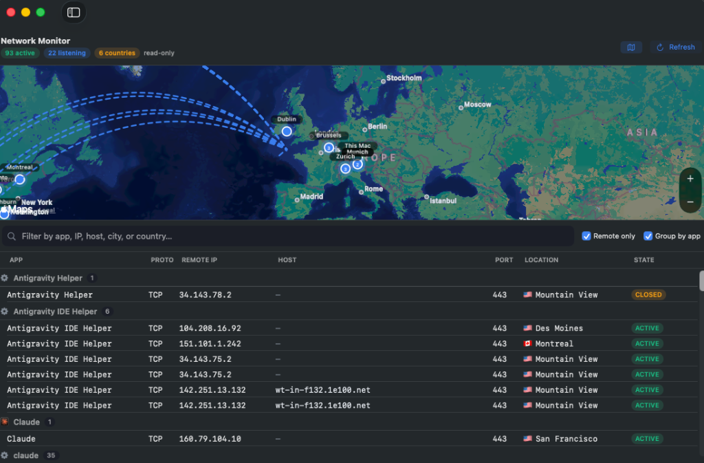

macOS Keychain Storage
High-value API keys (OpenAI, Anthropic, Stripe) are stored encrypted inside the macOS Keychain under the secure SecretSauce: namespace. Keeps keys secure and isolates them from raw text .env file leakage.
A premium, lightweight utility to view and manage environment variables, secure Keychain items, .env files, and background launch agents in one unified dashboard.
SecretSauce puts the power back in your hands by replacing clunky terminal commands with a secure, responsive desktop dashboard.
High-value API keys (OpenAI, Anthropic, Stripe) are stored encrypted inside the macOS Keychain under the secure SecretSauce: namespace. Keeps keys secure and isolates them from raw text .env file leakage.
Parse and update your local export statements inside system shell profiles (~/.zshrc, ~/.bashrc, ~/.bash_profile, ~/.profile). The app detects changes and updates configurations while preserving comments.
.env Configuration EditorOpen, view, and modify any local .env files inside a clean tabular grid. Edit key-value pairs, strip trailing inline comments, and safely quote values containing whitespace and special characters automatically.
Two controls, no plist archaeology: an autostart switch that survives a reboot, and one button to activate or deactivate an agent right now. See what each agent costs in memory, CPU, processes, and uptime, read plist parameters inside ~/Library/LaunchAgents, and update daemon environment configurations on the fly without using plist editors.
Inspect active system environment variables for your current terminal or login sessions. Easily search variables and persist selected items into your primary shell profile configuration with one click.
Built in 100% native AppKit and SwiftUI (macOS 13+). Single universal binary slice running natively on Apple Silicon and Intel. Zero Node/Electron runtime layers, zero bloat, runs under a ~7 MB disk footprint.
A read-only, Little-Snitch-style view of every open connection — which app talks to which remote host, IP, port, and state — plotted on a live world map with animated arcs from your location. Hover any endpoint for details, click to filter the table.
A real-time RAM dashboard: memory-pressure breakdown, swap warnings, and the biggest consumers clustered per app. Stop a memory-hungry launch agent or quit a runaway app in one click to reclaim resources — no polling, snapshots on demand.
Powered by Sparkle. Download once, then the app updates itself from the GitHub releases feed — a background check plus an on-demand Check for Updates… menu item. Every update is verified with a cryptographic EdDSA signature before it installs.
Audit active sockets, verify encrypted destination hosts, and verify secure endpoints in real-time. SecretSauce provides absolute network transparency, showing you exactly which macOS processes are communicating, and preventing silent background data leaks.
Uses the macOS system utility /usr/sbin/lsof -nP -i -F pcPnT to capture active internet connections. It inspects which applications are transmitting data, what remote IPs they communicate with, and the socket states.
Resolves remote IP addresses to readable hostnames locally using /usr/bin/host. Results are cached in memory to ensure lookups are fast and don't overwhelm network resources.
Queries remote locations (country, city, latitude, longitude) via ip-api.com batch endpoints. This is the **only** off-device call made by SecretSauce, running only when the tab is opened or manually refreshed.
Renders endpoints on a map using Apple's MapKit framework. Home location is marked with a pulsing blue pin, and connections are visualized as animated geodesic arcs that represent data flow.

In the age of cloud-hosted AI coding assistants (ChatGPT, Claude, etc.), keeping raw API credentials inside your project directories introduces serious risk. These tools parse your workspaces to provide context, which can expose high-value environment variables and API keys to third-party servers.
SecretSauce addresses this security loophole. By moving keys into the secure, encrypted macOS Keychain database, credentials are isolated from project directories, remaining hidden from workspace crawlers.
The local shell accesses them dynamically when code is run, maintaining security without disrupting your developer workflow.
/usr/bin/security, maintaining macOS sandboxing rules and Keychain permission standards./usr/sbin/lsof. The app makes zero external calls except location matching.